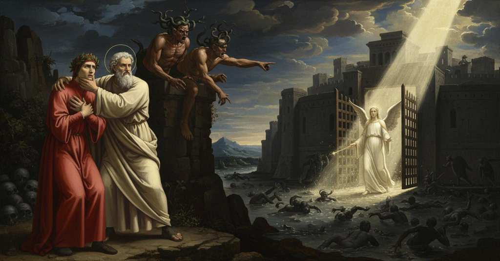

Inferno — Canto 9

1
Quel color che viltà di fuor mi pinse
The pallor that cowardice painted on me,
卑劣さが外から私に描いたその顔色は、
2
veggendo il duca mio tornare in volta,
seeing my leader turn back,
私の導き手が引き返すのを見て、
3
più tosto dentro il suo novo ristrinse.
he repressed his own new one all the sooner.
彼は自身の新しい（顔色）をより速く内に押し込めた。
4
Attento si fermò com’ uom ch’ascolta;
He stopped, attentive, like a man who listens,
彼は聞き耳を立てる者のように、注意深く立ち止まった。
5
ché l’occhio nol potea menare a lunga
for his eye could not lead him far
なぜなら目は彼を遠くまで導くことはできなかったからだ
6
per l’aere nero e per la nebbia folta.
through the black air and the thick fog.
黒い大気と濃い霧のために。
7
«Pur a noi converrà vincer la punga»,
“Still, it must be that we win this battle,”
「それでも我らはこの闘いに勝たねばなるまい」
8
cominciò el, «se non . . . Tal ne s’offerse.
he began, “if not . . . Such a one offered herself.
と彼は始めた、「さもなければ．．．かのような方が我らに身を捧げられた。
9
Oh quanto tarda a me ch’altri qui giunga!».
Oh how long it seems to me till someone arrives here!”
おお、ここに他の方が着くのがなんと待ち遠しいことか！」。
10
I’ vidi ben sì com’ ei ricoperse
I saw clearly how he covered up
私は彼がいかに覆い隠したかをよく見た
11
lo cominciar con l’altro che poi venne,
the beginning with what came after,
その始まりを、後に続いた別の言葉で、
12
che fur parole a le prime diverse;
which were words different from the first;
それは最初の言葉とは異なっていた。
13
ma nondimen paura il suo dir dienne,
but nonetheless his speech gave me fear,
しかしそれでも彼の言葉は恐怖を与えた、
14
perch’ io traeva la parola tronca
because I drew his broken-off words
なぜなら私はその途切れた言葉を、
15
forse a peggior sentenzia che non tenne.
perhaps to a worse meaning than they held.
彼が意図したよりも悪い意味に解釈したからだ。
16
«In questo fondo de la trista conca
“Into this depth of the sad hollow,
「この悲しき盆地の底には
17
discende mai alcun del primo grado,
does anyone from the first grade ever descend,
第一の階層から誰かが下りてきたことがありますか、
18
che sol per pena ha la speranza cionca?».
whose only punishment is severed hope?”
罰としてただ希望が断たれているだけの者が？」。
19
Questa question fec’ io; e quei «Di rado
This question I asked; and he: “It rarely
この質問を私はした。すると彼は「稀に」
20
incontra», mi rispuose, «che di noi
happens,” he answered me, “that any of us
と答えた、「我らの一人が
21
faccia il cammino alcun per qual io vado.
makes the journey which I am making.
私が行くこの道を通るということはある。
22
Ver è ch’altra fïata qua giù fui,
It is true I was down here another time,
実は、以前にも一度ここへ下りて来たことがある、
23
congiurato da quella Eritón cruda
conjured by that cruel Erichtho
あの残酷なエリクトーに呪文で強いられ、
24
che richiamava l’ombre a’ corpi sui.
who called shades back to their bodies.
彼女は亡霊をその肉体へと呼び戻していた。
25
Di poco era di me la carne nuda,
My flesh had been bare of me for little time
私から肉体が裸になってから間もない頃だった、
26
ch’ella mi fece intrar dentr’ a quel muro,
when she made me enter within that wall,
彼女は私をあの壁の中へ入らせたのだ、
27
per trarne un spirto del cerchio di Giuda.
to draw a spirit from the circle of Judas.
ユダの圏からある霊を引き出すために。
28
Quell’ è ’l più basso loco e ’l più oscuro,
That is the lowest place and the most dark,
そこは最も低く、最も暗い場所、
29
e ’l più lontan dal ciel che tutto gira:
and farthest from the Heaven that circles all:
そしてすべてを巡る天から最も遠い。
30
ben so ’l cammin; però ti fa sicuro.
I know the way well; therefore be secure.
道はよく知っている。だから安心するがよい。
31
Questa palude che ’l gran puzzo spira
This swamp that breathes the great stench
この大いなる悪臭を放つ沼が
32
cigne dintorno la città dolente,
encircles the grieving city,
悲しみの都を周りに取り囲んでいる、
33
u’ non potemo intrare omai sanz’ ira».
where we cannot enter now without wrath.”
そこへは今や怒りなくしては入れぬのだ」。
34
E altro disse, ma non l’ho a mente;
And he said more, but I have it not in mind;
そして彼は他にも言ったが、私は心に留めていない。
35
però che l’occhio m’avea tutto tratto
because my eye had been completely drawn
というのも私の目はすっかり引き寄せられていたからだ
36
ver’ l’alta torre a la cima rovente,
toward the high tower with the glowing summit,
赤く燃える頂を持つ高い塔へと、
37
dove in un punto furon dritte ratto
where in an instant there suddenly stood
そこで一瞬のうちに、まっすぐに現れたのは
38
tre furïe infernal di sangue tinte,
three infernal furies stained with blood,
血に染まった三人の地獄の復讐の女神（フューリー）、
39
che membra feminine avieno e atto,
who had feminine limbs and features,
彼女らは女性の四肢と仕草を持ち、
40
e con idre verdissime eran cinte;
and were girt with greenest hydras;
緑青色のヒュドラを腰にまとっていた。
41
serpentelli e ceraste avien per crine,
for hair they had little serpents and horned vipers,
小蛇と角蛇を髪とし、
42
onde le fiere tempie erano avvinte.
with which their savage temples were bound.
それで獰猛なこめかみは縛られていた。
43
E quei, che ben conobbe le meschine
And he, who well knew the handmaidens
そして彼は、よく知っていたその侍女たちを、
44
de la regina de l’etterno pianto,
of the queen of eternal lament,
永遠の嘆きの女王に仕える、
45
«Guarda», mi disse, «le feroci Erine.
“Look,” he said to me, “at the fierce Erinyes.
「見よ」と私に言った、「獰猛なエリーニュスを。
46
Quest’ è Megera dal sinistro canto;
This is Megaera on the left side;
こちらは左にいるメガイラ。
47
quella che piange dal destro è Aletto;
that one weeping on the right is Alecto;
右で嘆いているのはアレクト。
48
Tesifón è nel mezzo»; e tacque a tanto.
Tisiphone is in the middle”; and then fell silent.
ティーシポネーが中央にいる」。そう言うと彼は黙った。
49
Con l’unghie si fendea ciascuna il petto;
With her nails each one was clawing her breast;
爪でおのおの胸を掻き裂き、
50
battiensi a palme e gridavan sì alto,
they beat themselves with their palms and screamed so loud,
手のひらで自らを打ち、あまりに甲高く叫ぶので、
51
ch’i’ mi strinsi al poeta per sospetto.
that I pressed close to the poet out of fear.
私は恐怖のあまり詩人にしがみついた。
52
«Vegna Medusa: sì ’l farem di smalto»,
“Let Medusa come: then we’ll turn him to stone,”
「メドゥーサが来い、そうすれば奴を石にしてやろう」
53
dicevan tutte riguardando in giuso;
they all said, looking downward;
彼女らは皆、下を見下ろしながら言った。
54
«mal non vengiammo in Tesëo l’assalto».
“poorly we avenged the assault of Theseus.”
「テセウスの襲撃への復讐は、手ぬるかった」。
55
«Volgiti ’n dietro e tien lo viso chiuso;
“Turn your back and keep your face shut;
「後ろを向き、目を固く閉じておけ。
56
ché se ’l Gorgón si mostra e tu ’l vedessi,
for if the Gorgon shows herself and you should see her,
なぜならゴルゴンが現れてお前がそれを見れば、
57
nulla sarebbe di tornar mai suso».
there would be no returning ever above.”
二度と上へは戻れなくなるだろうから」。
58
Così disse ’l maestro; ed elli stessi
Thus said the master; and he himself
そう師は言った。そして彼自らが
59
mi volse, e non si tenne a le mie mani,
turned me, and did not trust my hands,
私を後ろ向きにさせ、私の手に頼らず、
60
che con le sue ancor non mi chiudessi.
but with his own he also covered me.
自身の両手でさらに私の目を塞いだ。
61
O voi ch’avete li ’ntelletti sani,
O you who have sound intellects,
おお、健全な知性を持つ汝らよ、
62
mirate la dottrina che s’asconde
behold the doctrine that is hidden
見よ、隠されている教えを
63
sotto ’l velame de li versi strani.
beneath the veil of the strange verses.
この奇妙な詩句のヴェールの下に。
64
E già venìa su per le torbide onde
And already there came over the turbid waves
そしてすでに濁った波の上をやって来た
65
un fracasso d’un suon, pien di spavento,
a crash of a sound, full of terror,
恐怖に満ちた、ある音の轟きが、
66
per cui tremavano amendue le sponde,
for which both the shores trembled,
そのために両方の岸は震えていた、
67
non altrimenti fatto che d’un vento
not otherwise made than of a wind,
さながら風がもたらすそれと異ならず
68
impetüoso per li avversi ardori,
impetuous from opposing heats,
相反する熱気により猛烈な、
69
che fier la selva e sanz’ alcun rattento
that strikes the forest and without any restraint
それは森を打ち、いかなる妨げもなく
70
li rami schianta, abbatte e porta fori;
shatters the branches, fells them, and carries them forth;
枝を折り、なぎ倒し、運び去る；
71
dinanzi polveroso va superbo,
dusty it goes on before, superb,
前方には埃を立てて傲然と進み、
72
e fa fuggir le fiere e li pastori.
and makes the wild beasts and the shepherds flee.
獣と牧童たちを逃げさせる。
73
Li occhi mi sciolse e disse: «Or drizza il nerbo
He freed my eyes and said: “Now direct the nerve
師は私の目を解き放ち言った。「さあ神経を向けよ
74
del viso su per quella schiuma antica
of your sight over that ancient foam,
顔の、かの古の泡立ちの上へ
75
per indi ove quel fummo è più acerbo».
there where that smoke is most harsh.”
かの煙が最も苛烈な場所へと」。
76
Come le rane innanzi a la nimica
As the frogs before the enemy
蛙たちが敵なる
77
biscia per l’acqua si dileguan tutte,
snake all scatter through the water,
蛇の前から水の中へと皆散り散りになるように、
78
fin ch’a la terra ciascuna s’abbica,
until each one squats upon the land,
それぞれが土に身を寄せるまで、
79
vid’ io più di mille anime distrutte
I saw more than a thousand destroyed souls
私は千以上の滅びた魂が
80
fuggir così dinanzi ad un ch’al passo
fleeing thus before one who at a walking pace
そのように逃げるのを見た、足早に
81
passava Stige con le piante asciutte.
was crossing Styx with his soles dry.
乾いた足裏でステュクスを渡っていた者の前から。
82
Dal volto rimovea quell’ aere grasso,
From his face he was removing that thick air,
顔からその濃い空気を払っていた、
83
menando la sinistra innanzi spesso;
waving his left hand often before him;
しばしば左手を前に動かしながら；
84
e sol di quell’ angoscia parea lasso.
and only by that annoyance he seemed weary.
そしてただその煩わしさにのみ疲れているようだった。
85
Ben m’accorsi ch’elli era da ciel messo,
Well I perceived that he was sent from Heaven,
私は確かに彼が天より遣わされし者だと気づき、
86
e volsimi al maestro; e quei fé segno
and I turned to my master; and he made a sign
師の方を向いた；すると師は合図した
87
ch’i’ stessi queto ed inchinassi ad esso.
that I should stay quiet and bow down to him.
私が静かにして、その者に頭を下げるようにと。
88
Ahi quanto mi parea pien di disdegno!
Ah, how full of disdain he seemed to me!
ああ、彼はなんと侮蔑に満ちているように見えたことか！
89
Venne a la porta e con una verghetta
He came to the gate and with a little wand
彼は門に来て、一本の小枝で
90
l’aperse, che non v’ebbe alcun ritegno.
opened it, for there was no resistance.
それを開けた、そこには何の抵抗もなかった。
91
«O cacciati del ciel, gente dispetta»,
“O you cast out of Heaven, despised people,”
「おお、天から追われし者、卑しむべき民よ」、
92
cominciò elli in su l’orribil soglia,
he began upon the horrible threshold,
彼は恐ろしい門の上で語り始めた、
93
«ond’ esta oltracotanza in voi s’alletta?
“from where is this insolence nourished in you?
「どこからその傲慢さがお前たちに宿るのか？
94
Perché recalcitrate a quella voglia
Why do you kick against that will
なぜお前たちはかの意志に蹴り逆らうのか
95
a cui non puote il fin mai esser mozzo,
whose end can never be cut short,
その目的は決して断たれることはなく、
96
e che più volte v’ha cresciuta doglia?
and which has more than once increased your pain?
そして幾度もお前たちの苦しみを増してきたというのに？
97
Che giova ne le fata dar di cozzo?
What avails it to butt against the fates?
運命に突っかかることに何の意味がある？
98
Cerbero vostro, se ben vi ricorda,
Your Cerberus, if you well remember,
汝らのケルベロスは、よく思い出せば、
99
ne porta ancor pelato il mento e ’l gozzo».
still bears his chin and gullet peeled for it.”
そのために今も顎と喉の皮が剥げているのだ」。
100
Poi si rivolse per la strada lorda,
Then he turned back along the filthy path,
それから彼は汚れた道へと踵を返し、
101
e non fé motto a noi, ma fé sembiante
and spoke no word to us, but had the look
我らには一言も告げず、しかし様子を見せた
102
d’omo cui altra cura stringa e morda
of one whom other care urges and bites
別の気遣いが締め付け、苛む人の
103
che quella di colui che li è davante;
than that of him who is before him;
目の前にいる者のことよりも；
104
e noi movemmo i piedi inver’ la terra,
and we moved our feet toward the city,
そして我らは大地の方へと足を進めた、
105
sicuri appresso le parole sante.
secure after the holy words.
その聖なる言葉の後で、安堵して。
106
Dentro li ’ntrammo sanz’ alcuna guerra;
We entered there without any strife;
我らは何の戦いもなくそこに入った。
107
e io, ch’avea di riguardar disio
and I, who had a desire to look upon
そして私は、見ることを欲していたので、
108
la condizion che tal fortezza serra,
the condition that such a fortress encloses,
そのような砦が内に秘める状態を、
109
com’ io fui dentro, l’occhio intorno invio:
as soon as I was inside, I cast my eye around:
中に入るとすぐに、目を周りへと送った。
110
e veggio ad ogne man grande campagna,
and I see on every hand a great plain,
そしてあらゆる方向に広大な平野を見る、
111
piena di duolo e di tormento rio.
full of sorrow and of wicked torment.
悲しみと邪悪な苦しみに満ちた。
112
Sì come ad Arli, ove Rodano stagna,
Just as at Arles, where the Rhône stagnates,
ローヌ川が淀むアルルでそうであるように、
113
sì com’ a Pola, presso del Carnaro
just as at Pola, near the Quarnaro
カルナーロの近くのポーラでそうであるように、
114
ch’Italia chiude e suoi termini bagna,
which closes Italy and bathes its borders,
それはイタリアを囲み、その境界を濡らす、
115
fanno i sepulcri tutt’ il loco varo,
the sepulchers make the whole place uneven,
墓石がその場所全体をでこぼこにしている、
116
così facevan quivi d’ogne parte,
so they did here on every side,
ここでもあらゆる場所でそのようであった、
117
salvo che ’l modo v’era più amaro;
except that the manner there was more bitter;
ただその様はより苦痛に満ちていたが。
118
ché tra li avelli fiamme erano sparte,
for among the tombs flames were scattered,
なぜなら墓の間には炎が散らばっており、
119
per le quali eran sì del tutto accesi,
by which they were so completely heated,
それによって墓はすっかり熱せられていた、
120
che ferro più non chiede verun’ arte.
that no art requires iron hotter.
どんな技術もそれ以上鉄を熱することはできないほどに。
121
Tutti li lor coperchi eran sospesi,
All their lids were held suspended,
それらの蓋はすべて持ち上げられており、
122
e fuor n’uscivan sì duri lamenti,
and from them issued such harsh laments,
そしてそこからはひどい嘆きが漏れ出ていた、
123
che ben parean di miseri e d’offesi.
that they truly seemed from the miserable and the afflicted.
まさに惨めで傷つけられた者たちのもののようだった。
124
E io: «Maestro, quai son quelle genti
And I: “Master, who are these people
そして私は言った、「師よ、あれはどのような人々ですか
125
che, seppellite dentro da quell’ arche,
who, buried inside those arks,
あの棺の中に葬られて、
126
si fan sentir coi sospiri dolenti?».
make themselves heard with their sorrowful sighs?”
苦痛のため息でその存在を知らせているのですか」。
127
E quelli a me: «Qui son li eresïarche
And he to me: “Here are the heresiarchs
すると彼は私に、「ここにいるのは異端の首長たちだ
128
con lor seguaci, d’ogne setta, e molto
with their followers, of every sect, and much
あらゆる宗派の、その追随者たちと共に。そして大いに
129
più che non credi son le tombe carche.
more than you think are the tombs laden.
お前が思うより、墓は満ちているのだ。
130
Simile qui con simile è sepolto,
Here like with like is buried,
ここでは似た者同士が共に葬られ、
131
e i monimenti son più e men caldi».
and the monuments are more and less hot.”
そして墓石はより熱かったり、そうでなかったりする」。
132
E poi ch’a la man destra si fu vòlto,
And after he had turned to the right hand,
そして彼が右手に転じた後、
133
passammo tra i martìri e li alti spaldi.
we passed between the torments and the high ramparts.
我らは苦罰と高い胸壁の間を進んだ。